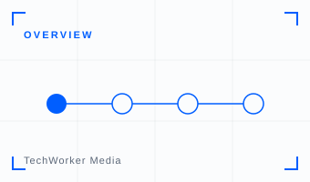
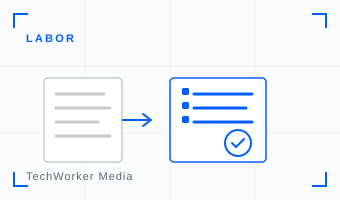
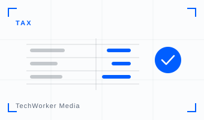

生成AI×士業メディアの運用を開始しました
士業事務所の実務と守秘義務・正確性の前提を踏まえ、生成AIを安全に活用する方法を継続的に発信します。



株式会社TechWorkerは、2026年4月20日より、士業の実務に特化した生成AI活用の特集メディア「生成AI×士業」の運用を開始しました。税理士・社会保険労務士・行政書士・司法書士・弁護士など、士業事務所の現場で生成AIをどう業務に使うかを、継続的に発信していきます。
メディアで扱うこと
このメディアは、士業事務所の実務に直結するテーマにフォーカスします。契約書・申請書類・通知文のドラフト、相談の論点整理、調査の下調べ、事務所ナレッジの整理など、ツールの紹介にとどまらず「どの業務に、どう組み込むか」まで踏み込んで解説します。守秘義務や独占業務といった士業ならではの前提を踏まえ、有資格者の判断を残したまま準備作業を速くする使い方を整理してお届けします。
記事はすべて、上場企業を含む45社・2,500名の生成AI導入・研修支援で得た知見をもとにしています。机上の一般論ではなく、実際に現場で機能した型をお届けします。
なぜ「生成AI×士業」なのか
生成AIの成否を分けるのは、ツールそのものよりも「使う人と、その業務文脈」です。書面・調査・相談といった文章仕事の比重が大きい士業は、生成AIの効果が出やすい一方で、守秘義務・独占業務・正確性への要求も高い領域です。当社は「AIはエンジンだ。コンテキストは燃料だ。」という考えのもと、AIを動かす人と、その文脈づくりを支援してきました。このメディアは、その知見を士業に向けて開いていく取り組みです。
最新の記事は生成AI×士業メディアからご覧いただけます。生成AI活用のご相談は、お問い合わせフォームよりお気軽にご連絡ください。